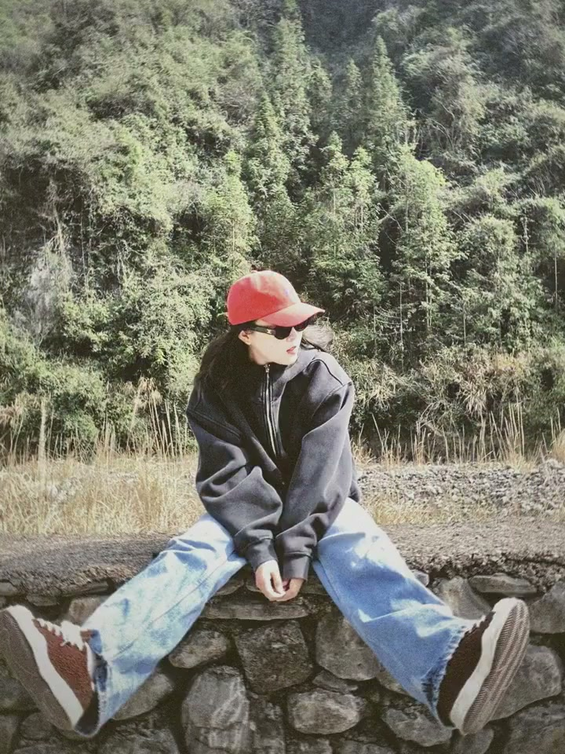
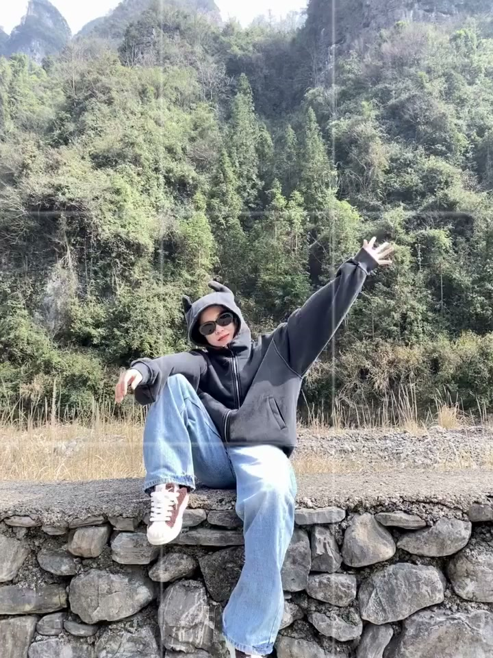
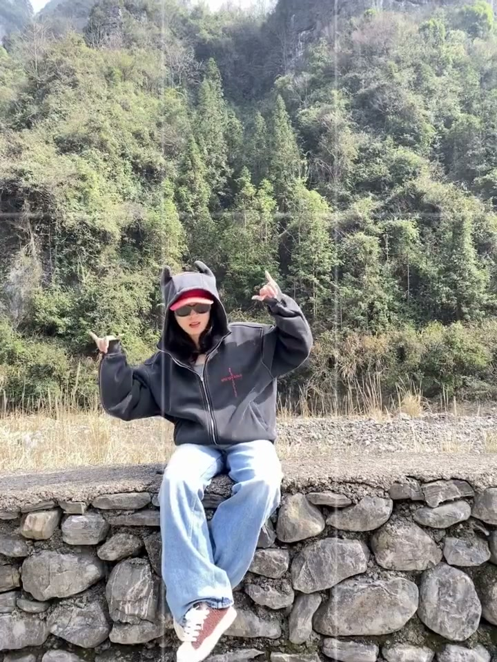
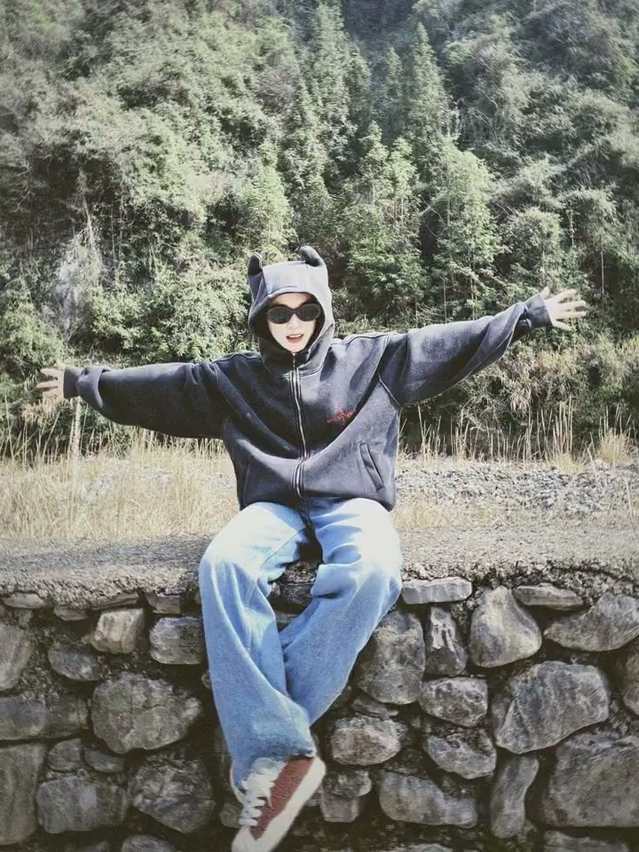

内容要点
本视频无口播内容，全程为拍照姿势动作演示。
知识结构
[00:00→00:02]
大幅度肢体张开
双手向上或向两侧大幅张开，配合自然的笑容。大动作在画面中制造张力和能量感，是"生命力"风格的核心表达方式。
[00:03→00:05]
跳跃/动态抓拍
身体离开地面的跳跃动作，配合手部自然摆动的曲线。动态抓拍最考验时机——要在最高点或最有延伸感的瞬间按下快门。
[00:06→00:08]
侧身动态+笑容
身体侧向镜头，配合回头看镜头或侧脸微笑。侧身能展现身体线条，结合动态和笑容传递"被偷拍"的自然感。
[00:08→00:10]
收尾定格姿势
最后一个姿势通常是最自然的一瞬间——也许是一个回头、一个微笑、或是身体自然放松的状态。
核心结论
"生命力"拍照的核心不是摆 pose 而是"动起来"——胳膊张开、跳起来、转圈、回头笑，在动作中抓拍比静止摆拍更有感染力。
图文实录
姿势一：大力张开手臂
00:00 – 00:02
双手大幅度向两侧或上方张开，像拥抱整个世界。这个动作的核心是"敢做大"——很多人拍照扭捏在于动作太小，手臂只抬到肩高就停了。生命力风格要求你把手臂举到头顶以上，让身体占据画面更多面积。

[00:02] 手臂大幅张开：核心是"敢做大"，动作越大越有张力
Arms spread wide: the core is “dare to go big” — bigger moves mean more tension
姿势二：跳跃抓拍
00:03 – 00:05
身体跳离地面，手部自然甩动。跳跃时最重要的是不要刻意控制表情——跳起来的瞬间让笑容自然释放，比咬牙憋笑好看十倍。摄影师需要连拍，事后选表情最自然的那张。

[00:04] 跳跃抓拍：连拍模式，选表情最自然的一张
Jump candid: burst mode, pick the most natural expression
姿势三：侧身回眸
00:06 – 00:08
身体侧向或背对镜头，然后回头看向相机。这个姿势结合了"不经意感"和"动态美"——身体有方向感，但回头制造了与镜头的互动。侧身还能展示身体侧面线条。

[00:07] 侧身回眸：方向感+互动感，比正面直对镜头更自然
Side glance-back: direction + interaction — more natural than facing the camera head-on
姿势四：自然收尾
00:08 – 00:10
动作后的自然状态——一个放松的笑容或随意的站姿。往往是"拍完了"的瞬间最自然，所以有人专门在连拍最后留几张"说好了不拍了"的照片。

[00:09] 自然收尾：最有生命力的照片往往是"以为拍完了"的那张
Natural ending: the most alive photos are often the “thought it was over” ones